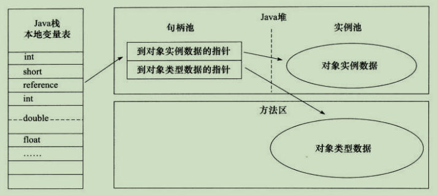
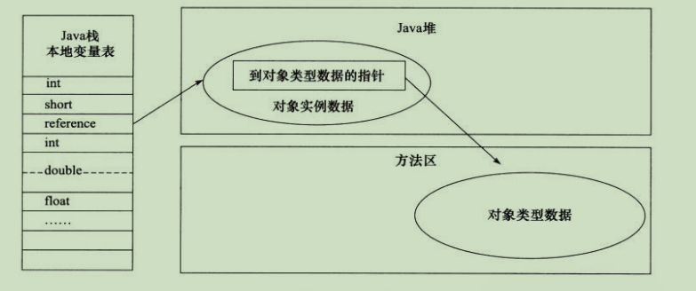

<!DOCTYPE html>


<html lang="en">


<head>
  <meta charset="utf-8" />
   
  <meta name="keywords" content="学习" />
   
  <meta name="description" content="G.zero的个人博客" />
  
  <meta name="viewport" content="width=device-width, initial-scale=1, maximum-scale=1" />
  <title>
    JVM学习笔记-java对象 |  yang-blog
  </title>
  <meta name="generator" content="hexo-theme-ayer">
  
  <link rel="shortcut icon" href="/favicon.ico" />
  
  
<link rel="stylesheet" href="/dist/main.css">

  
<link rel="stylesheet" href="https://cdn.jsdelivr.net/gh/Shen-Yu/cdn/css/remixicon.min.css">

  
<link rel="stylesheet" href="/css/custom.css">

  
  
<script src="https://cdn.jsdelivr.net/npm/pace-js@1.0.2/pace.min.js"></script>

  
  

  

</head>

</html>

<body>
  <div id="app">
    
      
    <main class="content on">
      <section class="outer">
  <article
  id="post-jvm/java-jvm-object"
  class="article article-type-post"
  itemscope
  itemprop="blogPost"
  data-scroll-reveal
>
  <div class="article-inner">
    
    <header class="article-header">
       
<h1 class="article-title sea-center" style="border-left:0" itemprop="name">
  JVM学习笔记-java对象
</h1>
 

    </header>
     
    <div class="article-meta">
      <a href="/2019/05/22/jvm/java-jvm-object/" class="article-date">
  <time datetime="2019-05-22T07:47:30.000Z" itemprop="datePublished">2019-05-22</time>
</a> 
  <div class="article-category">
    <a class="article-category-link" href="/categories/JAVA-JVM/">JAVA_JVM</a>
  </div>
  
<div class="word_count">
    <span class="post-time">
        <span class="post-meta-item-icon">
            <i class="ri-quill-pen-line"></i>
            <span class="post-meta-item-text"> Word count:</span>
            <span class="post-count">2k</span>
        </span>
    </span>

    <span class="post-time">
        &nbsp; | &nbsp;
        <span class="post-meta-item-icon">
            <i class="ri-book-open-line"></i>
            <span class="post-meta-item-text"> Reading time≈</span>
            <span class="post-count">7 min</span>
        </span>
    </span>
</div>
 
    </div>
      
    <div class="tocbot"></div>


  
    <div class="article-entry" itemprop="articleBody">
       
  <p>&nbsp; &nbsp; &nbsp; &nbsp;我们在学习了java虚拟机的内存知识后，我们接下来研究下对象的在java堆中分配、布局和访问的全过程。</p>
<h3 id="对象的创建"><a href="#对象的创建" class="headerlink" title="对象的创建"></a><font color=#008000>对象的创建</font></h3><p>&nbsp; &nbsp; &nbsp; &nbsp;在我们开发的过程中，用到的最多的当然还是通过 new 关键字去创建一个对象，那么在创建是一个怎样的过程呢？</p>
<p>&nbsp; &nbsp; &nbsp; &nbsp;1.在执行 new 指令时，会去检查这个指令的参数是否能在常量池中定位到一个类的符号引用。并且检查这个符号引入代表的类是否已被加载、解析和初始化。如果没有就需要就行响应的类加载过程。（加载过程后面会说）</p>
<p>&nbsp; &nbsp; &nbsp; &nbsp;2.在类加载检查通过后，会为新生的对象分配内存空间，对象所需要的内存空间，在类加载完成后便可完全确定下来，为对象分配空间等同于在java堆中划分出一块内存。分配内存空间有两种分配方式：</p>
<ul>
<li>指针碰撞</li>
</ul>
<p>&nbsp; &nbsp; &nbsp; &nbsp;java堆的内存空间是<strong>规整</strong>的，使用的内存空间放在一起，空闲的内存空间放在一起，中间使用一个指针作为分界点的指示器。所分配的内存就是仅仅把指针箱空闲的那边挪动一段与对象大小相等的距离。</p>
<ul>
<li>空闲列表</li>
</ul>
<p>&nbsp; &nbsp; &nbsp; &nbsp;java堆内存空间不是<strong>规整</strong>的，使用的和没有使用的交错在一起，虚拟机会维护一个列表，记录上哪些内存块是可用的，在分配的时候从列表中找到一个块足够大的空间划分给对象实例，并更新列表上的记录。</p>
<p>&nbsp; &nbsp; &nbsp; &nbsp; 具体使用哪种方式取决于java堆是否是规整的，而是否规整取决于垃圾收集器是否带有压缩整理功能决定。所以在使用Serial、ParNew等带有Compact过程的收集器，系统使用分配算法是指针碰撞，而使用CMS这种基于Mark-Sweep算法的采用空闲列表。<br>&nbsp; &nbsp; &nbsp; &nbsp;在划分空间的时候，如果频繁的创建对象，就会出现线程安全问题。比如两个线程A和B，虚拟机在为A分配内存的时候，指针还没有来得及修改，对象B同时使用了原来的指针来分配内存。决定方法有两种，<br>一种是使用CAS配上失败重试的方式保证更新操作的原子性。<br>另一种是按照线程的维度去分配空间。每个线程会预先分配到一小块的内存，称为<font color="red">本地线程分配缓冲（Thread Local Allocation Buffer,TLAB）</font>。需要分配内存的时候，在该线程的TLAB上去分配，只有TLAB用完了，并分配新的TLAB才需要同步锁定。通过-XX:+/-UseTLAB参数设置是否使用TLAB。</p>
<p>&nbsp; &nbsp; &nbsp; &nbsp;3.分配内存后，虚拟机需要将分配的内存空间都初始化为零值。从而保证对象的实例字段在java代码中可以不赋初始值就可以直接使用。</p>
<p>&nbsp; &nbsp; &nbsp; &nbsp;4.接下来要对对象进行必要的设置，例如这个对象是哪个类的实例，如何才能找到类的元数据信息、对象的哈希码、对象的GC分代年龄等信息，这些信息都存放在对象头中。</p>
<p>&nbsp; &nbsp; &nbsp; &nbsp;5.完成上述工作，需要执行 init 方法，把对象按照程序员的意愿进行初始化。这样一个真正的对象才算完全生产出来。</p>
<h3 id="对象的内存布局"><a href="#对象的内存布局" class="headerlink" title="对象的内存布局"></a><font color=#008000>对象的内存布局</font></h3><p>&nbsp; &nbsp; &nbsp; &nbsp;对象的存储布局分为三个区域：对象头（Header）、实例数据（Instant Data）和对其填充（Padding）</p>
<h4 id="对象头"><a href="#对象头" class="headerlink" title="对象头"></a>对象头</h4><p>&nbsp; &nbsp; &nbsp; &nbsp;第一部分用于存储对象自身运行时数据，哈希码、GC分代年龄、锁状态标志、线程持有的锁、偏向线程ID、偏向时间戳等等，官方称为“Mark Word”。这部分数据的长度在32位和64位的虚拟机上分别是32bit 和 64bit。Mark Word 被设计成一个非固定的数据结构以便在极小的空间内存储更多的信息。他会根据对象的状态复用自己的存储空间。比如，在32位的HotSpot虚拟机上，如果对象处于未被锁定的状态下，那么Mark Word的32bit空间中，25bit用于存储对象的哈希码，4bit用于存储对象的分代年龄，2bit存储锁标志位，1bit固定为0。而其他状态下的存储如下。</p>
<table>
<thead>
<tr>
<th align="center">存储内容</th>
<th align="center">标志位</th>
<th align="center">状态</th>
</tr>
</thead>
<tbody><tr>
<td align="center">对象哈希码、对象分代年龄</td>
<td align="center">01</td>
<td align="center">未锁定</td>
</tr>
<tr>
<td align="center">指向锁记录的指针</td>
<td align="center">00</td>
<td align="center">轻量级锁</td>
</tr>
<tr>
<td align="center">执行重量级锁的指针</td>
<td align="center">10</td>
<td align="center">膨胀（重量级锁定）</td>
</tr>
<tr>
<td align="center">空，不需要记录信息</td>
<td align="center">11</td>
<td align="center">GC标志</td>
</tr>
<tr>
<td align="center">偏向线程ID、偏向时间戳、对象分代年龄</td>
<td align="center">01</td>
<td align="center">可偏向</td>
</tr>
</tbody></table>
<p>&nbsp; &nbsp; &nbsp; &nbsp; 另一部分是类型指针。即对象指向它的类元数据的指针，虚拟机通过这个指针确定这个对象是哪个类的实例。但是不是所有的虚拟机都需要在对象数据上保留类型指针，也就是说查找对象的元数据信息并不是一定需要经过对象本身。如果对象是一个java数组，那对象头还需要一块用于记录数据长度的数据，因为虚拟机可以通过普通的java对象的元数据信息确定java对象的大小，但是从数据的元数据中无法确定数组的大小。</p>
<h3 id="实例数据"><a href="#实例数据" class="headerlink" title="实例数据"></a>实例数据</h3><p>&nbsp; &nbsp; &nbsp; &nbsp; 对象真正存储的有效信息。也是程序代码中所定义的各种类型的字段内容。无论是从父类继承下来的，还是在子类中定义的，都需要记录起来。</p>
<h3 id="对其填充"><a href="#对其填充" class="headerlink" title="对其填充"></a>对其填充</h3><p>&nbsp; &nbsp; &nbsp; &nbsp; 不是必然存在额，也没有特殊的意义，仅仅起着占位符的作用。HotSpot VM 的自动内存管理系统要求对象起始地址必须是8字节的整数倍。换句话，就是对象的大小必须是8字节的整数倍，而对象头部分正好是8字节的整数倍，因此当对象实例数据部分没有对齐时，就需要通过对齐填充来补充。</p>
<h3 id="对象的访问定位"><a href="#对象的访问定位" class="headerlink" title="对象的访问定位"></a><font color=#008000>对象的访问定位</font></h3><p>&nbsp; &nbsp; &nbsp; &nbsp;java程序通过栈上的reference数据来操作堆上的具体对象。reference类型在java虚拟机规范中只规定了一个指向对象的引用，并没有定义通过何种方式去定位、访问堆中对象的具体位置，所以对象访问方式取决于虚拟机事项而定。目前访问方式主要有两种：</p>
<ul>
<li>使用句柄</li>
</ul>
<p>java堆中会划分出一块内存来作为句柄池，reference中存储的是对象的句柄地址，而句柄包含了对象实例数据与类型数据各自的具体地址信息。</p>
<p>使用句柄最大的好处是reference中存储的是稳定的句柄地址，在对象被移动时只会改变句柄中的实例数据指针，而reference本身不需要修改。<br></p>
<ul>
<li>直接指针</li>
</ul>
<p>java堆对象的布局中就必须考虑如何放置访问类型数据的相关信息，而reference中存储的直接就是对象地址。</p>
<p>使用直接指针速度更快，由于对象访问在java中非常频繁，这类开销积少成多，也是一项非常可观的执行成本。HotSpot就是使用直接指针。</p>
<p></p>
 
      <!-- reward -->
      
    </div>
    

    <!-- copyright -->
    
    <footer class="article-footer">
       
<div class="share-btn">
      <span class="share-sns share-outer">
        <i class="ri-share-forward-line"></i>
        分享
      </span>
      <div class="share-wrap">
        <i class="arrow"></i>
        <div class="share-icons">
          
          <a class="weibo share-sns" href="javascript:;" data-type="weibo">
            <i class="ri-weibo-fill"></i>
          </a>
          <a class="weixin share-sns wxFab" href="javascript:;" data-type="weixin">
            <i class="ri-wechat-fill"></i>
          </a>
          <a class="qq share-sns" href="javascript:;" data-type="qq">
            <i class="ri-qq-fill"></i>
          </a>
          <a class="douban share-sns" href="javascript:;" data-type="douban">
            <i class="ri-douban-line"></i>
          </a>
          <!-- <a class="qzone share-sns" href="javascript:;" data-type="qzone">
            <i class="icon icon-qzone"></i>
          </a> -->
          
          <a class="facebook share-sns" href="javascript:;" data-type="facebook">
            <i class="ri-facebook-circle-fill"></i>
          </a>
          <a class="twitter share-sns" href="javascript:;" data-type="twitter">
            <i class="ri-twitter-fill"></i>
          </a>
          <a class="google share-sns" href="javascript:;" data-type="google">
            <i class="ri-google-fill"></i>
          </a>
        </div>
      </div>
</div>

<div class="wx-share-modal">
    <a class="modal-close" href="javascript:;"><i class="ri-close-circle-line"></i></a>
    <p>扫一扫，分享到微信</p>
    <div class="wx-qrcode">
      
    </div>
</div>

<div id="share-mask"></div>  
  <ul class="article-tag-list" itemprop="keywords"><li class="article-tag-list-item"><a class="article-tag-list-link" href="/tags/JVM/" rel="tag">JVM</a></li></ul>

    </footer>
  </div>

   
  <nav class="article-nav">
    
      <a href="/2019/05/24/jvm/java-jvm-gc/" class="article-nav-link">
        <strong class="article-nav-caption">上一篇</strong>
        <div class="article-nav-title">
          
            JVM学习笔记-垃圾回收机制
          
        </div>
      </a>
    
    
      <a href="/2019/05/21/jvm/java-jvm-1/" class="article-nav-link">
        <strong class="article-nav-caption">下一篇</strong>
        <div class="article-nav-title">JVM学习笔记-运行时数据区域</div>
      </a>
    
  </nav>

   
<!-- valine评论 -->
<div id="vcomments-box">
  <div id="vcomments"></div>
</div>
<script src="//cdn1.lncld.net/static/js/3.0.4/av-min.js"></script>
<script src="https://cdn.jsdelivr.net/npm/valine@1.4.14/dist/Valine.min.js"></script>
<script>
  new Valine({
    el: "#vcomments",
    app_id: "chaSYi8FMdJBwzIBpxeNjqWC-gzGzoHsz",
    app_key: "PqqkLYgPkHvH1BmyQqySWnSK",
    path: window.location.pathname,
    avatar: "monsterid",
    placeholder: "给我的文章加点评论吧~",
    recordIP: true,
  });
  const infoEle = document.querySelector("#vcomments .info");
  if (infoEle && infoEle.childNodes && infoEle.childNodes.length > 0) {
    infoEle.childNodes.forEach(function (item) {
      item.parentNode.removeChild(item);
    });
  }
</script>
<style>
  #vcomments-box {
    padding: 5px 30px;
  }

  @media screen and (max-width: 800px) {
    #vcomments-box {
      padding: 5px 0px;
    }
  }

  #vcomments-box #vcomments {
    background-color: #fff;
  }

  .v .vlist .vcard .vh {
    padding-right: 20px;
  }

  .v .vlist .vcard {
    padding-left: 10px;
  }
</style>

 
     
</article>

</section>
      <footer class="footer">
  <div class="outer">
    <ul>
      <li>
        Copyrights &copy;
        2020
        <i class="ri-heart-fill heart_icon"></i> G.zero
      </li>
    </ul>
    <ul>
      <li>
        
        
        
        Powered by <a href="https://hexo.io" target="_blank">Hexo</a>
        <span class="division">|</span>
        Theme - <a href="https://github.com/Shen-Yu/hexo-theme-ayer" target="_blank">Ayer</a>
        
      </li>
    </ul>
    <ul>
      <li>
        
        
        <span>
  <span><i class="ri-user-3-fill"></i>Visitors:<span id="busuanzi_value_site_uv"></span></s>
  <span class="division">|</span>
  <span><i class="ri-eye-fill"></i>Views:<span id="busuanzi_value_page_pv"></span></span>
</span>
        
      </li>
    </ul>
    <ul>
      
    </ul>
    <ul>
      
    </ul>
    <ul>
      <li>
        <!-- cnzz统计 -->
        
      </li>
    </ul>
  </div>
</footer>
      <div class="float_btns">
        <div class="totop" id="totop">
  <i class="ri-arrow-up-line"></i>
</div>

<div class="todark" id="todark">
  <i class="ri-moon-line"></i>
</div>

      </div>
    </main>
    <aside class="sidebar on">
      <button class="navbar-toggle"></button>
<nav class="navbar">
  
  <div class="logo">
    <a href="/"></a>
  </div>
  
  <ul class="nav nav-main">
    
    <li class="nav-item">
      <a class="nav-item-link" href="/">主页</a>
    </li>
    
    <li class="nav-item">
      <a class="nav-item-link" href="/archives">归档</a>
    </li>
    
    <li class="nav-item">
      <a class="nav-item-link" href="/categories">分类</a>
    </li>
    
    <li class="nav-item">
      <a class="nav-item-link" href="/tags">标签</a>
    </li>
    
    <li class="nav-item">
      <a class="nav-item-link" href="/player">播放器</a>
    </li>
    
  </ul>
</nav>
<nav class="navbar navbar-bottom">
  <ul class="nav">
    <li class="nav-item">
      
      <a class="nav-item-link nav-item-search"  title="Search">
        <i class="ri-search-line"></i>
      </a>
      
      
    </li>
  </ul>
</nav>
<div class="search-form-wrap">
  <div class="local-search local-search-plugin">
  <input type="search" id="local-search-input" class="local-search-input" placeholder="Search...">
  <div id="local-search-result" class="local-search-result"></div>
</div>
</div>
    </aside>
    <script>
      if (window.matchMedia("(max-width: 768px)").matches) {
        document.querySelector('.content').classList.remove('on');
        document.querySelector('.sidebar').classList.remove('on');
      }
    </script>
    <div id="mask"></div>

<!-- #reward -->
<div id="reward">
  <span class="close"><i class="ri-close-line"></i></span>
  <p class="reward-p"><i class="ri-cup-line"></i>请我喝杯咖啡吧~</p>
  <div class="reward-box">
    
    
  </div>
</div>
    
<script src="/js/jquery-2.0.3.min.js"></script>


<script src="/js/lazyload.min.js"></script>

<!-- Tocbot -->


<script src="/js/tocbot.min.js"></script>

<script>
  tocbot.init({
    tocSelector: '.tocbot',
    contentSelector: '.article-entry',
    headingSelector: 'h1, h2, h3, h4, h5, h6',
    hasInnerContainers: true,
    scrollSmooth: true,
    scrollContainer: 'main',
    positionFixedSelector: '.tocbot',
    positionFixedClass: 'is-position-fixed',
    fixedSidebarOffset: 'auto'
  });
</script>

<script src="https://cdn.jsdelivr.net/npm/jquery-modal@0.9.2/jquery.modal.min.js"></script>
<link rel="stylesheet" href="https://cdn.jsdelivr.net/npm/jquery-modal@0.9.2/jquery.modal.min.css">
<script src="https://cdn.jsdelivr.net/npm/justifiedGallery@3.7.0/dist/js/jquery.justifiedGallery.min.js"></script>

<script src="/dist/main.js"></script>

<!-- ImageViewer -->

<!-- Root element of PhotoSwipe. Must have class pswp. -->
<div class="pswp" tabindex="-1" role="dialog" aria-hidden="true">

    <!-- Background of PhotoSwipe. 
         It's a separate element as animating opacity is faster than rgba(). -->
    <div class="pswp__bg"></div>

    <!-- Slides wrapper with overflow:hidden. -->
    <div class="pswp__scroll-wrap">

        <!-- Container that holds slides. 
            PhotoSwipe keeps only 3 of them in the DOM to save memory.
            Don't modify these 3 pswp__item elements, data is added later on. -->
        <div class="pswp__container">
            <div class="pswp__item"></div>
            <div class="pswp__item"></div>
            <div class="pswp__item"></div>
        </div>

        <!-- Default (PhotoSwipeUI_Default) interface on top of sliding area. Can be changed. -->
        <div class="pswp__ui pswp__ui--hidden">

            <div class="pswp__top-bar">

                <!--  Controls are self-explanatory. Order can be changed. -->

                <div class="pswp__counter"></div>

                <button class="pswp__button pswp__button--close" title="Close (Esc)"></button>

                <button class="pswp__button pswp__button--share" style="display:none" title="Share"></button>

                <button class="pswp__button pswp__button--fs" title="Toggle fullscreen"></button>

                <button class="pswp__button pswp__button--zoom" title="Zoom in/out"></button>

                <!-- Preloader demo http://codepen.io/dimsemenov/pen/yyBWoR -->
                <!-- element will get class pswp__preloader--active when preloader is running -->
                <div class="pswp__preloader">
                    <div class="pswp__preloader__icn">
                        <div class="pswp__preloader__cut">
                            <div class="pswp__preloader__donut"></div>
                        </div>
                    </div>
                </div>
            </div>

            <div class="pswp__share-modal pswp__share-modal--hidden pswp__single-tap">
                <div class="pswp__share-tooltip"></div>
            </div>

            <button class="pswp__button pswp__button--arrow--left" title="Previous (arrow left)">
            </button>

            <button class="pswp__button pswp__button--arrow--right" title="Next (arrow right)">
            </button>

            <div class="pswp__caption">
                <div class="pswp__caption__center"></div>
            </div>

        </div>

    </div>

</div>

<link rel="stylesheet" href="https://cdn.jsdelivr.net/npm/photoswipe@4.1.3/dist/photoswipe.min.css">
<link rel="stylesheet" href="https://cdn.jsdelivr.net/npm/photoswipe@4.1.3/dist/default-skin/default-skin.min.css">
<script src="https://cdn.jsdelivr.net/npm/photoswipe@4.1.3/dist/photoswipe.min.js"></script>
<script src="https://cdn.jsdelivr.net/npm/photoswipe@4.1.3/dist/photoswipe-ui-default.min.js"></script>

<script>
    function viewer_init() {
        let pswpElement = document.querySelectorAll('.pswp')[0];
        let $imgArr = document.querySelectorAll(('.article-entry img:not(.reward-img)'))

        $imgArr.forEach(($em, i) => {
            $em.onclick = () => {
                // slider展开状态
                // todo: 这样不好，后面改成状态
                if (document.querySelector('.left-col.show')) return
                let items = []
                $imgArr.forEach(($em2, i2) => {
                    let img = $em2.getAttribute('data-idx', i2)
                    let src = $em2.getAttribute('data-target') || $em2.getAttribute('src')
                    let title = $em2.getAttribute('alt')
                    // 获得原图尺寸
                    const image = new Image()
                    image.src = src
                    items.push({
                        src: src,
                        w: image.width || $em2.width,
                        h: image.height || $em2.height,
                        title: title
                    })
                })
                var gallery = new PhotoSwipe(pswpElement, PhotoSwipeUI_Default, items, {
                    index: parseInt(i)
                });
                gallery.init()
            }
        })
    }
    viewer_init()
</script>

<!-- MathJax -->

<!-- Katex -->

<!-- busuanzi  -->


<script src="/js/busuanzi-2.3.pure.min.js"></script>


<!-- ClickLove -->

<!-- ClickBoom1 -->

<!-- ClickBoom2 -->

<!-- CodeCopy -->


<link rel="stylesheet" href="/css/clipboard.css">

<script src="https://cdn.jsdelivr.net/npm/clipboard@2/dist/clipboard.min.js"></script>
<script>
  function wait(callback, seconds) {
    var timelag = null;
    timelag = window.setTimeout(callback, seconds);
  }
  !function (e, t, a) {
    var initCopyCode = function(){
      var copyHtml = '';
      copyHtml += '<button class="btn-copy" data-clipboard-snippet="">';
      copyHtml += '<i class="ri-file-copy-2-line"></i><span>COPY</span>';
      copyHtml += '</button>';
      $(".highlight .code pre").before(copyHtml);
      $(".article pre code").before(copyHtml);
      var clipboard = new ClipboardJS('.btn-copy', {
        target: function(trigger) {
          return trigger.nextElementSibling;
        }
      });
      clipboard.on('success', function(e) {
        let $btn = $(e.trigger);
        $btn.addClass('copied');
        let $icon = $($btn.find('i'));
        $icon.removeClass('ri-file-copy-2-line');
        $icon.addClass('ri-checkbox-circle-line');
        let $span = $($btn.find('span'));
        $span[0].innerText = 'COPIED';
        
        wait(function () { // 等待两秒钟后恢复
          $icon.removeClass('ri-checkbox-circle-line');
          $icon.addClass('ri-file-copy-2-line');
          $span[0].innerText = 'COPY';
        }, 2000);
      });
      clipboard.on('error', function(e) {
        e.clearSelection();
        let $btn = $(e.trigger);
        $btn.addClass('copy-failed');
        let $icon = $($btn.find('i'));
        $icon.removeClass('ri-file-copy-2-line');
        $icon.addClass('ri-time-line');
        let $span = $($btn.find('span'));
        $span[0].innerText = 'COPY FAILED';
        
        wait(function () { // 等待两秒钟后恢复
          $icon.removeClass('ri-time-line');
          $icon.addClass('ri-file-copy-2-line');
          $span[0].innerText = 'COPY';
        }, 2000);
      });
    }
    initCopyCode();
  }(window, document);
</script>


<!-- CanvasBackground -->


    
  </div>
</body>

</html>